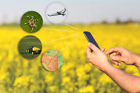

Tratores com GPS, drones que monitoram plantações e sensores que analisam o solo: o campo tá cada vez mais tecnológico!
Hoje em dia, os agricultores usam aplicativos pra controlar a irrigação, prever o clima e até saber o melhor momento da colheita. 📲🌦️
E sabe o que é mais legal? Essa tecnologia faz o alimento chegar com mais qualidade e rapidez nas nossas mesas. É a inovação trabalhando a favor de todo mundo!
 ⬅️ Voltar